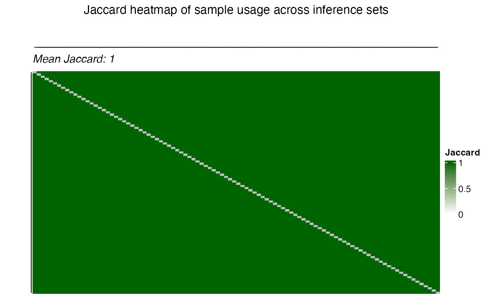

Permutation Interaction Effect
Source:vignettes/permutation_interaction_effect.Rmd
permutation_interaction_effect.RmdIntroduction
Here we showcase how permutation testing is used to assess if
genotype-phenotype relationships differ across ancestries. In omics
research frameworks like limma are gold standard to test
for differetnial expressed genes. However, such frameworks are build on
biological and statistical assuptions on the underlying data. In
permutation testing theses assumptions are reduced, because pvalues are
derived by modelling an empirical null distribution. In case of
interaction effects of the form phenotype x ancestry, the
ancestry label is permuted creating a null, which assumes no effect by
ancestry.
Overrepresentation of EUR ancestry
In omics research EUR ancestry is often overrepresented compared to
other ancestries. Hence, data of non-Europeans is often sparse and can
effect the discovery of true effects. The
frameworkCrossAncestryGenPhen tries to be fair by
subsampling the overrepresented ancestry to match the sample size of the
underrepresented ancestry. The following code snippet showcases such an
imbalance on a simulated dataset.
library(CrossAncestryGenPhen)
library(ggplot2)
# Seed for reproducibility
seed <- 42
set.seed(seed)
# Simulate example data
p <- 100 # Number of genes
n_EUR <- 600
n_AFR <- 40
# Expression matrices for EUR and AFR ancestries
X <- matrix(rnorm(n_EUR * p), nrow = n_EUR, ncol = p)
Y <- matrix(rnorm(n_AFR * p), nrow = n_AFR, ncol = p)
colnames(X) <- colnames(Y) <- paste0("Feature_", seq_len(p))
# Metadata for EUR and AFR ancestries
# EUR: overrepresented compared to AFR
MX <- data.frame(
id = paste0("Sample_", seq_len(n_EUR)),
condition = factor(c(rep("Control", 400), rep("Case", 200))),
ancestry = "A"
)
# AFR: underrepresented compared to EUR
MY <- data.frame(
id = paste0("Sample_", seq_len(n_AFR)),
condition = factor(c(rep("Control", 10), rep("Case", 30))),
ancestry = "B"
)
# Rownames of matrix must be smaple ids
rownames(X) <- MX$id
rownames(Y) <- MY$id
# Visualize sample size imbalance
meta <- rbind(MX, MY)
# Plot
ggplot(meta, aes(x = ancestry, fill = condition)) +
geom_bar(position = "dodge", color = "black") +
labs(
title = "Condition Imbalance Across Ancestries",
x = "Ancestry",
y = "Sample Count",
fill = "Condition"
) 
Running a limma pipeline on such imbalanced data might
lead to false positive results, because the underrepresented ancestry is
not well represented in the data. One way
CrossAncestryGenPhen tries to mitigate this is by
stratifying the data. This approach is limited to cases where the
European ancestry is truly overrepreseted.
Single subset run of permutation interaction effect
Stratification step
The function split_stratified_ancestry_sets creates a
stratified subset to account for sample size but also control for the
phenotype imbalance in the underrepresented ancestry. The idea is to
create a EUR train set, which is the remaining EUR cohort
after subsampling, a EUR-subset test set (mimicking the
underrepresented ancestry) based on the compared ancestry
inferecnce set.
stratify_col <- "condition" # Column to stratify on
# Split the data into stratified sets
split <- split_stratified_ancestry_sets(
X = X,
Y = Y,
MX = MX,
MY = MY,
g_col = stratify_col,
seed = 42
)
# Visulaize stratified sets
plot_stratified_sets(
MX = split$test$M,
MY = split$inference$M,
MR = split$train$M,
g_col = stratify_col
)
The output will contain train, test and
inference sets and additional information on used strata.
Each subset contains a gene expression matrix ($X), a
metadata frame ($M) and the used ids
($ids).
# Output
str(split)
#> List of 4
#> $ train :List of 3
#> ..$ X : num [1:560, 1:100] 1.371 -0.565 0.363 0.633 0.404 ...
#> .. ..- attr(*, "dimnames")=List of 2
#> .. .. ..$ : chr [1:560] "Sample_1" "Sample_2" "Sample_3" "Sample_4" ...
#> .. .. ..$ : chr [1:100] "Feature_1" "Feature_2" "Feature_3" "Feature_4" ...
#> ..$ M :'data.frame': 560 obs. of 3 variables:
#> .. ..$ id : chr [1:560] "Sample_1" "Sample_2" "Sample_3" "Sample_4" ...
#> .. ..$ condition: Factor w/ 2 levels "Case","Control": 2 2 2 2 2 2 2 2 2 2 ...
#> .. ..$ ancestry : chr [1:560] "A" "A" "A" "A" ...
#> ..$ ids: chr [1:560] "Sample_1" "Sample_2" "Sample_3" "Sample_4" ...
#> $ test :List of 3
#> ..$ X : num [1:40, 1:100] 1.215 -1.097 1.113 -0.8 0.446 ...
#> .. ..- attr(*, "dimnames")=List of 2
#> .. .. ..$ : chr [1:40] "Sample_24" "Sample_136" "Sample_146" "Sample_158" ...
#> .. .. ..$ : chr [1:100] "Feature_1" "Feature_2" "Feature_3" "Feature_4" ...
#> ..$ M :'data.frame': 40 obs. of 3 variables:
#> .. ..$ id : chr [1:40] "Sample_24" "Sample_136" "Sample_146" "Sample_158" ...
#> .. ..$ condition: Factor w/ 2 levels "Case","Control": 2 2 2 2 2 2 2 2 2 2 ...
#> .. ..$ ancestry : chr [1:40] "A" "A" "A" "A" ...
#> ..$ ids: chr [1:40] "Sample_24" "Sample_136" "Sample_146" "Sample_158" ...
#> $ inference :List of 3
#> ..$ X : num [1:40, 1:100] 0.389 0.442 -0.533 -0.781 -0.124 ...
#> .. ..- attr(*, "dimnames")=List of 2
#> .. .. ..$ : chr [1:40] "Sample_1" "Sample_2" "Sample_3" "Sample_4" ...
#> .. .. ..$ : chr [1:100] "Feature_1" "Feature_2" "Feature_3" "Feature_4" ...
#> ..$ M :'data.frame': 40 obs. of 3 variables:
#> .. ..$ id : chr [1:40] "Sample_1" "Sample_2" "Sample_3" "Sample_4" ...
#> .. ..$ condition: Factor w/ 2 levels "Case","Control": 2 2 2 2 2 2 2 2 2 2 ...
#> .. ..$ ancestry : chr [1:40] "B" "B" "B" "B" ...
#> ..$ ids: chr [1:40] "Sample_1" "Sample_2" "Sample_3" "Sample_4" ...
#> $ strata_info:List of 3
#> ..$ usable : chr [1:2] "Case" "Control"
#> ..$ missing : chr(0)
#> ..$ insufficient: chr(0)The function plot_stratified_feature allows to plot
single or multiple features per split.
plot_stratified_feature(
X = split$test$X,
Y = split$inference$X,
R = split$train$X,
MX = split$test$M,
MY = split$inference$M,
MR = split$train$M,
features = NULL, # will use first 9 features
g_col = stratify_col
)Permutation interaction analysis
The function split_stratified_ancestry_sets creates on
downsampling of the overrepresented ancestry. Note: A single subset only
generates one estimate of the difference it is recomendet to run
multiple subsets to get a more robust estimate of the interaction
effect. In case of interaction effects the split$test and
split$inference sets are used. The function
perm_interaction_effect estimates the difference in
phenotype means between the two sets. Where X represents
one ancestry and Y the other ancestry.
B <- 100 # Number of permutations
perm_res <- perm_interaction_effect(
X = split$test$X,
Y = split$inference$X,
MX = split$test$M,
MY = split$inference$M,
g_col = stratify_col,
B = B,
seed = seed
)
str(perm_res)
#> List of 3
#> $ summary_stats:'data.frame': 100 obs. of 7 variables:
#> ..$ feature : chr [1:100] "Feature_1" "Feature_2" "Feature_3" "Feature_4" ...
#> ..$ T_obs : num [1:100] -0.513 -0.668 -0.332 0.556 -0.534 ...
#> ..$ z_score : num [1:100] -1.259 -1.27 -0.666 1.313 -0.905 ...
#> ..$ p_param_value: num [1:100] 0.208 0.204 0.506 0.189 0.366 ...
#> ..$ p_param_adj : num [1:100] 0.814 0.814 0.897 0.814 0.831 ...
#> ..$ p_emp_value : num [1:100] 0.228 0.139 0.475 0.198 0.396 ...
#> ..$ p_emp_adj : num [1:100] 0.862 0.862 0.897 0.862 0.866 ...
#> $ T_null : num [1:100, 1:100] 0.798 -0.241 0.42 -0.561 0.399 ...
#> ..- attr(*, "dimnames")=List of 2
#> .. ..$ : NULL
#> .. ..$ : chr [1:100] "Feature_1" "Feature_2" "Feature_3" "Feature_4" ...
#> $ B_used : int 100The output of the function contains three items:
summary_stats: Contains estimated interaction effects (T_obs) per feature,p_values, andp_adj, which are adjusted for multiple testing using the Benjamini–Hochberg method.T_null: The observed null distribution for each feature across permutations.B_used: The number of permutation iterations used to estimate the null distribution.
plot_null_distribution(
data = perm_res,
p_normal = TRUE,
p_empirical = TRUE,
show_normal = TRUE,
show_empirical = TRUE,
features = NULL, # will use first 9 features
title = "Null distribution of test statistic with two-sided p-values"
)Results of single subset run
Using the summary statistics, the effect sizes and associated
p-values can be viusalized in a volcano plot using thr function
plot_volcano.R.
plot_volcano(
data = perm_res$summary_stats,
x_var = "T_obs",
y_var = "p_param_adj",
sig_thr = 0.05,
effect_thr = 1,
x_label = "effect size (T_obs)",
y_label = "-log10(p_param_adj)",
title = "Volcano plot of interaction effect in a single subset run"
)Multiple subset run of permutation interaction effect
As previly mentioned, a single subset only generates one estimate of the difference. To get a more robust estimate of the interaction effect, it is recommended to run multiple subsets. In this case the pipeline is similar to run a single subset but with concerns on how to aggregate over multiple subsets. Because the samples from the underrepresented ancestry are identical over multiple subsets this introduced dependence. Hence, aggregating p-values or test statistics is not trivial.
Loop run over multiple subsets
n_subsets <- 100 # Number of subsets to run
# Track ids and results
perm_results <- list()
id_log <- list()
for (i in 1:n_subsets) {
# Stratified ancestry sets
split <- split_stratified_ancestry_sets(
X = X,
Y = Y,
MX = MX,
MY = MY,
g_col = stratify_col,
seed = seed + i
)
# Store sample id usage with role (train, test, inference) and iteration
id_log[[i]] <- track_sample_ids(split, i)
perm_res <- perm_interaction_effect(
X = split$test$X,
Y = split$inference$X,
MX = split$test$M,
MY = split$inference$M,
g_col = stratify_col,
B = B,
seed = seed + i
)
# Add up permutation result
perm_stats <- perm_res$summary_stats
perm_stats$iteration <- i
perm_results[[length(perm_results) + 1]] <- perm_stats
}
# Combine across iterations
perm_combined <- do.call(rbind, perm_results)
id_usage <- do.call(rbind, id_log)The object perm_combined contains the combined
permutation results across all subsets. The function
plot_pvalue_distribution() will plot the distribution of
p-values across subsets.
head(perm_combined, 10)
#> feature T_obs z_score p_param_value p_param_adj p_emp_value
#> 1 Feature_1 -0.42964519 -0.798741934 0.4244401 0.8726044 0.4158416
#> 2 Feature_2 0.03005561 0.002321042 0.9981481 0.9981481 0.9603960
#> 3 Feature_3 -0.34510354 -0.858368388 0.3906891 0.8726044 0.3564356
#> 4 Feature_4 -0.31790285 -0.536222071 0.5918051 0.9193499 0.5841584
#> 5 Feature_5 -0.21040408 -0.296899930 0.7665429 0.9532724 0.7326733
#> 6 Feature_6 -0.22639552 -0.367383802 0.7133328 0.9532724 0.6732673
#> 7 Feature_7 0.37994413 0.706411269 0.4799324 0.8726044 0.5643564
#> 8 Feature_8 0.37742283 0.779812988 0.4355010 0.8726044 0.5346535
#> 9 Feature_9 0.42564843 0.797356992 0.4252437 0.8726044 0.4851485
#> 10 Feature_10 0.70502336 1.519475735 0.1286428 0.8240990 0.0990099
#> p_emp_adj iteration
#> 1 0.8316832 1
#> 2 0.9603960 1
#> 3 0.8316832 1
#> 4 0.9350935 1
#> 5 0.9350935 1
#> 6 0.9350935 1
#> 7 0.9350935 1
#> 8 0.9350935 1
#> 9 0.9153746 1
#> 10 0.8250825 1
plot_pvalue_distribution(
data = perm_combined,
x_var = "p_param_value",
fill_var = "T_obs",
features = NULL, # will use first 9 features
title = "Histogram of p-values across subsets"
)Dependence of multiple subsets
From a biological view, feautures with low p-value across subsets are
more likely to be true positives. However, from a statistical
perspective, the p-values are not independent across subsets and hence
to aggregate them it is important to consider. The samples are shared
across the subsets and this sharing of samples can be visualized using
the plot_jaccard_heatmap() function.
plot_jaccard_heatmap(
data = id_usage,
role = "test",
title = "Jaccard heatmap of sample usage across test sets",
)
plot_jaccard_heatmap(
data = id_usage,
role = "inference",
title = "Jaccard heatmap of sample usage across inference sets",
)
Correlation of the test statistic and the p-values can be visualized
using the plot_correlation_heatmap() function.
plot_correlation_heatmap(
data = perm_combined,
value_col = "T_obs",
iter_col = "iteration",
title = "Test statistic correlation across subsets",
)
plot_correlation_heatmap(
data = perm_combined,
value_col = "p_param_value",
iter_col = "iteration",
title = "P-value correlation across subsets",
)